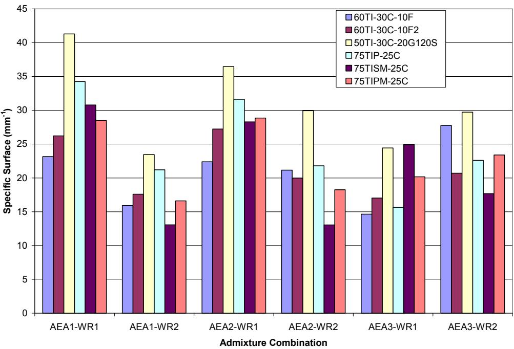
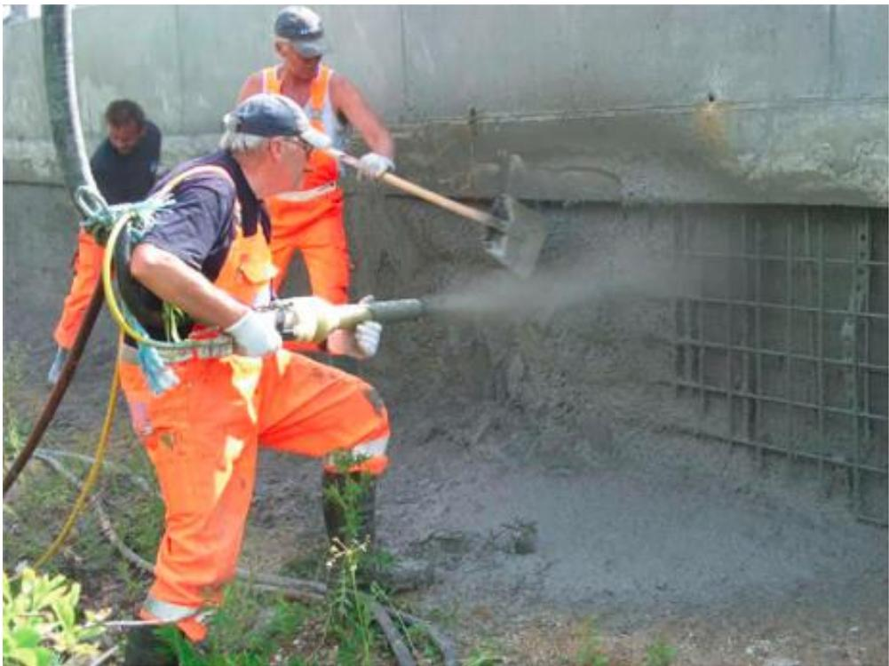
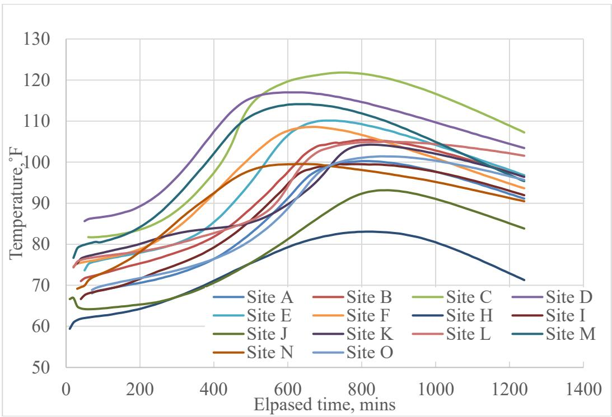
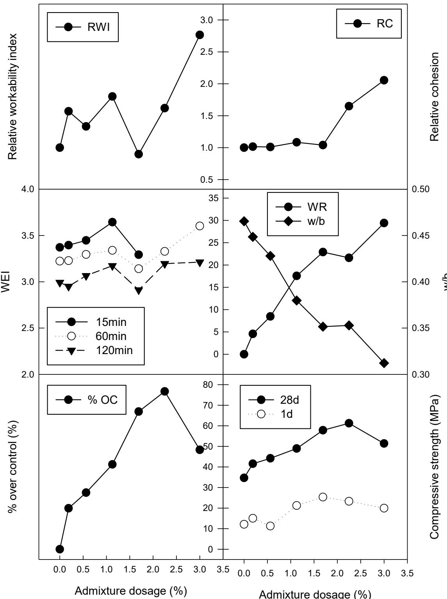
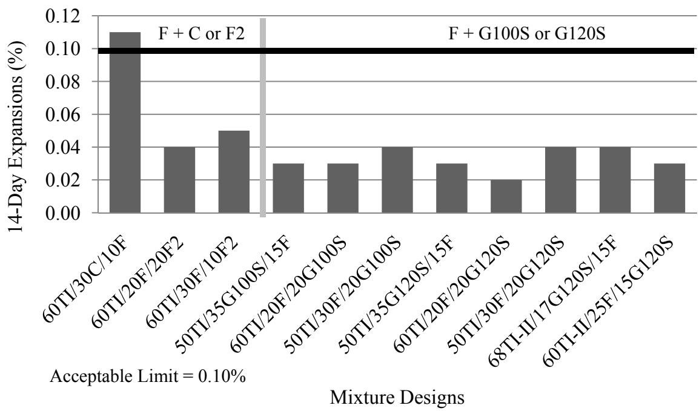

Cement-Admixture Compatibility
Cement-admixture compatibility is a chemical interaction phenomenon of Chemical Admixtures for Concrete that determines whether specific admixtures can be successfully integrated into concrete mixtures without causing adverse reactions such as flash set or excessive retardation [13]. This interaction affects Cement Hydration, setting time, and concrete performance; incompatibility issues, including premature stiffening and unpredictable setting behavior, have been observed with various cement and admixture combinations, particularly involving high-range water reducers and set retarders [13]. Because these interactions can significantly affect fresh properties like slump and air void characteristics, thorough evaluation of material compatibility is essential before concrete placement to ensure proper pavement performance [2], as incompatibility can cause abnormal setting, reduced strength, or unpredictable Heat of Hydration [1].
Sources (18)
Introduction to Modern Mix Design Challenges
Incompatibility issues are increasingly prevalent because modern concrete mix designs must integrate a multitude of new, sometimes marginal materials, which significantly reduces tolerance for variations in subgrade quality or construction practices [2]. For instance, high-calcium fly ashes may contain calcium aluminates that require additional sulfates to control their reactions when combined with water-reducing admixtures [3].

Effect of admixture combination on the specific surface for mixtures containing large amounts of Class C fly ash [3]Furthermore, in roller-compacted concrete with low water content, higher-than-normal admixture dosages are required because limited moisture hinders the initiation of chemical actions [4].
Mechanisms of Admixture Action
Water-reducing agents neutralize the surface charges on cement particles, which breaks up flocculated structures and releases trapped water to improve workability, allowing cement particles to move past each other more freely for a given water content [5]. High-range water-reducing agents (superplasticizers) enhance cement particle dispersion through electrical repulsion and steric hindrance mechanisms, with polycarboxylates and purified lignosulfonates now dominating industry use over older naphthalene and melamine types [4]. These superplasticizers mildly retard concrete setting, which reduces heat generation during the setting period without affecting the total heat of hydration [1]. The effectiveness of an admixture is intrinsically linked to its achieved water reduction; identical dosages yield different consistency properties if the resulting water-to-binder ratios differ [4]. Furthermore, the specific dosage of gypsum added to cement is a critical factor in controlling the hydration rate of aluminates, which directly influences the effectiveness of water-reducing admixtures and prevents flash set [6].
 Schematic sketch of plasticizing mechanism [4]
Schematic sketch of plasticizing mechanism [4]
Retarding admixtures, primarily composed of carboxylic acid salts or polysaccharides like sucrose, slow early hydration without significantly altering water demand, often resulting in higher long-term strength compared to non-delayed concrete [4]. These admixtures decrease early-age heat of hydration and temperature rise, with values becoming equal to non-retarded mixes at approximately 3-7 days [1]. In rapid-set cement systems used for latex-modified overlays, citric acid acts as a retarding admixture that extends the dormant period and shifts the peak heat generation rate to later times; while latex addition does not significantly alter the thermal signature of the rapid-set cement, the combination with citric acid causes cumulative heat to remain lower than non-retarded mixes until 7.5 hours [7]. Conversely, accelerating admixtures increase the rate of heat evolution during the setting stage and, depending on their chemical composition, may also increase heat liberation during the hardening stage [1]. Other additives include air-entraining admixtures, which form discrete, spherical air voids ranging from 10 to 1000 μm by lowering water surface tension and using surfactant blends to prevent bubble coalescence at the air-water interface [4], and superabsorbent polymers (SAPs), where the alkaline environment of cement pore solution reduces the osmotic pressure driving fluid uptake, resulting in lower absorptivity compared to tap water and causing a gradual decrease in absorption over time as calcium ions neutralize the polymer’s anionic carboxylate groups [8].
 Heat of hydration of cement pastes: (a) hydration heat release rate and (b) cumulative heat [8]
Heat of hydration of cement pastes: (a) hydration heat release rate and (b) cumulative heat [8]
 Effect of superplasticizer on cement hydration (adapted from Jolicoeur et al. 1998) [1]
Effect of superplasticizer on cement hydration (adapted from Jolicoeur et al. 1998) [1]
Admixture Addition Timing and Mixing Procedures
Delaying the addition of high-range water-reducing admixtures (HRWRA) increases cement paste workability compared to adding them at the beginning, as less HRWRA is absorbed by the cement paste [9]. Even delaying admixture addition by a few seconds allows aluminates to hydrate initially without the admixture, which significantly alters compatibility outcomes [1]. To optimize dispersion while managing absorption by cementitious materials, polycarboxylate-based high-range water reducers like Glenium® 7700 are typically split into two doses—half during initial mixing and the remainder after a three-minute rest period [10]. Furthermore, adding superplasticizers (SPs) in water as a single dose with sufficient mixing time enhances their function, particularly for high-performance concrete with low binder content [9].
Regarding air entrainment and rheology, adding air-entraining admixtures (AEA) at the end of the mixing procedure, after a uniform mix is established, produces the best air void system despite initial addition yielding higher total air content [9]; however, unusually long mixing times can cause erratic air contents that are highly dependent on the specific type of admixtures used in the mixture [9]. Additionally, superabsorbent polymers can be introduced to shotcrete either as dry powder at the nozzle to rapidly reduce viscosity or as presoaked particles for internal curing, with specific dosages such as 0.4% SAP effectively modifying rheology without additional set-accelerating admixtures [8].

Shotcreting of wall panels with SAP-modified concrete in Lyngby, Denmark [8]Calorimetry for Incompatibility Detection
Calorimetry, especially isothermal and coffee cup tests, is very effective at identifying incompatibilities, as approximately 99% of interaction problems occur with materials that individually comply with existing standards [1]. Identifying material incompatibility requires comparing heat evolution curves against typical mixes under environmental conditions similar to those experienced during project use [11]. Isothermal calorimetry can capture heat reaction at the start of hydration and measures heat flow while maintaining both the specimen and its surrounding environment at approximately the same temperature, allowing for precise detection of cement-admixture compatibility issues through unique thermal fingerprints [1]. This method can detect the specific thermal signature of flash set caused by inadequate sulfate control, allowing for the identification of incompatibility before it manifests as a workability loss in the field [6]. For example, the interaction between citric acid and rapid-set cement results in a rapid increase in cumulative heat from approximately 25 J/g to 180 J/g between five and ten hours after mixing, which is double the rate observed in conventional pavement cements; this intense heat generation phase poses a risk of thermal cracking if the concrete experiences a sudden temperature drop following exposure to cold environments [7].
 Calorimetry results for the incompatible materials [11]
Calorimetry results for the incompatible materials [11]
Other methods include unthermostated heat conduction calorimeters, which can quantify retardation and detect cement-admixture incompatibility by monitoring ambient temperature stability and heat capacity balance between samples and references [1], and coffee cup tests, which utilize thermocouples to measure temperature differences between paste samples and reference sand to provide a simple method to check compatibility for cements with supplementary cementitious materials or admixtures [1]. Simple calorimetry tests such as Dewar, coffee cup, and sprayed-foam basket methods generally provide critical feedback within 12 to 48 hours for investigating hydration effects [1]. While semi-adiabatic calorimetry tests typically yield mean temperature rises that are 2–3% lower than those from adiabatic tests, they remain capable of accurately predicting the adiabatic temperature rise for pastes, mortars, and concrete samples [11]. Furthermore, RILEM Round Robin testing demonstrated that for all adiabatic tests, 50% of the adiabatic temperature rise variations occurred within a narrow range spanning only 2 K, indicating high reproducibility regardless of specimen size or initial temperature [11].
 Effect of cement type on heat of hydration [11]
Effect of cement type on heat of hydration [11]
Testing Protocols and Analytical Methods
To verify mix proportions and identify incompatibility, recommended tests include set time, heat evolution, stiffening (ASTM C 359), strength development, ring test, foam index, foam drainage, air void analyzer, hardened air, and clustering [11]. Specifically, testing for admixture overdose effects indicates how close a mixture is to being out of balance and determines the maximum overdose that can be afforded [1], noting that doubling or tripling recommended water-reducing admixture dosages has been found to delay the silicate hydration peak, causing significant retardation [3]. Compatibility effects on water migration within the mix can be evaluated using the bleeding rate test (ASTM C 232) [12], while X-ray fluorescence (XRF) analysis is used to quantify binder chemical composition to identify potential compatibility issues such as false set or flash set arising from sulfate imbalances [13]. Furthermore, the ASTM C403 test method is frequently used alongside calorimetric data to correlate the physical setting time of concrete mixtures with the underlying chemical hydration processes influenced by admixture compatibility [6]. For mineralogical characterization, X-ray diffraction and thermal analysis are utilized to identify specific minerals present in bulk samples, while glass content estimation via X-ray diffraction helps characterize the reactivity of supplementary cementitious materials [12].

Calorimetric data [6]Regarding air systems, the Air Void Analyzer (AVA) provides real-time analysis of the air void system during construction, allowing for immediate adjustments to air-entraining agent dosages to correct spacing factors and improve freeze-thaw durability [13]. Additionally, the application of a 0.9 percent aggregate correction factor to fresh air content measurements is necessary because hardened air content in slag mixes frequently falls below pressure meter readings by more than 1 percent due to bubble coalescence or instability during casting [10]. Finally, quality control testing can be conducted on mortar specimens rather than full-scale concrete specimens if test results from both matrix types are directly compared to ensure consistency [12].
 Air Void Analyzer [13]
Air Void Analyzer [13]
Interactions with Supplementary Cementitious Materials (SCMs)
Incorporating supplementary cementitious materials reduces the maximum temperature rise and delays the time to maximum heat generation, which results in a longer time to initial and final set [14]. Because supplementary cementitious materials with larger surface areas due to increased fineness effectively increase the amount of sulfate required to control hydration [3], the combined use of supplementary cementitious materials and water-reducing admixtures can severely delay strength development within concrete mixtures [3]. For instance, mixtures containing 30% Class C fly ash with Type I Portland cement can experience retarded compressive strengths due to sulfate imbalance combined with sucrose-based water reducers [3], though incompatibility issues between water reducers and Class C fly ash can be eliminated by substituting blended cement in place of Type I Portland cement [3]. Additionally, a low-range water reducer can significantly reduce the time to set when used with Class C fly ash, an effect that is not observed with other admixtures or fly ashes [14]. Furthermore, the presence of Class F2 fly ash can cause compatibility problems with admixtures that lead to high bleeding potentials and scattered setting time data, indicating a failure in the expected interaction between the mineral admixture and chemical additives [15]. In contrast, metakaolin is more efficient than silica fume at reducing bleeding potential due to its clay properties and fineness, which help it absorb water and retain it within the mixture [15].
 Temperature data for ternary mixtures with 35% slag cement [14]
Temperature data for ternary mixtures with 35% slag cement [14]
Regarding specific applications of metakaolin, incorporation at less than 10% by weight can produce heat of hydration curves that closely match those of plain Portland cement concrete [3]. To maximize compressive strength, optimum metakaolin replacement levels range from 15% to 25% by weight [3], and a 15% replacement of metakaolin is sufficient to prevent deleterious alkali-silica reaction expansion [3].
Impact on Flowability and Fresh Properties
The addition of ground granulated blast-furnace slag (GGBSF) tends to reduce paste flowability, requiring the combined use of fly ash or water-reducing agents at replacement levels of 20% or higher to maintain adequate concrete workability [16]. Similarly, metakaolin increases water demand, necessitating a larger dosage of water-reducing admixture compared to other supplementary cementitious materials [3], and it requires an air-entraining admixture dosage comparable to that needed for silica fume concrete [3]. Regarding admixtures, the addition of viscosity modifying admixtures (VMA) increases the green strength of fresh concrete while causing a moderate decrease in flowability, whereas certain clay additions can increase flowability without altering green strength levels [17]. High-range water reducers reduce paste thixotropy and viscosity without affecting yield stress, while air-entraining agents increase both the yield stress and overall viscosity of the cement paste [17]. Furthermore, thixotropic admixtures such as Actigel increase paste thixotropy over time, which helps maintain green strength and shape stability in self-consolidating concrete during extrusion processes [17], while limestone dust can be used as an inert fine material replacement for cementitious components to improve flowability and reduce drying shrinkage potential in self-consolidating concrete mixtures [17].
 Effect of mineral and chemical admixtures on flowability and green strength of fresh concrete with small-sized aggregates [17]
Effect of mineral and chemical admixtures on flowability and green strength of fresh concrete with small-sized aggregates [17]
The choice of water reducer also impacts mixture behavior; polycarboxylate-based water reducers can increase concrete cohesion dramatically after a specific dosage threshold, potentially making the mix extremely cohesive and difficult to work with [4], whereas lignosulfonate-based water reducers may exhibit poor finishability and a tendency toward segregation if the balance between water reduction and cohesiveness is not carefully managed [4]. Additionally, the presence of air-entraining admixtures can significantly alter the workability characteristics of fresh concrete mixtures that already contain plasticizing agents [4].

Relative properties for P-05 admixed concrete mixtures. RWI: Relative workability index; RC: Relative cohesion; %OC: % over control [4]Durability, Air Void Systems, and Shrinkage Control
Compatibility between chemical admixtures and supplementary cementitious materials significantly influences the air void system and long-term durability of concrete, necessitating specific examination for various binary and ternary cement combinations [16]. Excessive air voids, which can be destabilized by supplementary cementitious materials (SCMs) when combined with certain chemical admixtures, reduce the effective cross-sectional area of concrete elements and consequently decrease compressive strength [2]. The stability of entrained air varies significantly between cement types; while some blends maintain stable air content above 5% across different testing methods, others exhibit less stable air entrainment that requires increased admixture dosages as the water-to-binder ratio decreases [18]. Concrete with very low water-to-binder ratios (w/b) may not require air entrainment because the pore surface tension prevents water from freezing at ordinary ambient temperatures, though a limiting w/b of approximately 0.25 is often cited as the threshold below which air entrainment becomes unnecessary [18]. Furthermore, mixtures containing high LOI Class F fly ash require a greater dosage of air-entraining admixture to meet spacing factor limits [3], and adding 9 ounces of defoamer admixture during mixing can reduce the air content of fresh concrete [14].
 Effect of admixture combination on the percent of air voids less than 300 μm for mixtures containing large amounts of Class F fly ash [3]
Effect of admixture combination on the percent of air voids less than 300 μm for mixtures containing large amounts of Class F fly ash [3]
The choice of air-entraining admixture significantly impacts the performance of slag-blended concrete; Micro Air® produces smaller, more closely spaced air bubbles and maintains stable hardened air content, whereas Vinsol resin results in larger bubbles and a progressive increase in demand as slag content rises [10]. Specifically, Micro Air® air-entraining agents reduce chloride ion ingress more effectively than Vinsol resin in slag concretes, likely because their smaller bubble size limits ionic flow paths despite resulting in higher total air content [10]. Additionally, specific water reducers can significantly increase the percentage of effective air voids less than 300 µm in diameter compared to other admixture types [3]. High-alkali cement increases the required dosage of air-entraining agents by approximately 20 percent compared to low-alkali cement, and this demand further escalates with higher slag replacement levels in high-alkali systems [10].
Shrinkage and surface durability are also influenced by chemical additives and curing methods. Shrinkage reducing admixtures (SRA) significantly decrease drying shrinkage strain in restrained concrete, with dosages of 7.5 l/m3 effectively reducing susceptibility to cracking compared to lower dosages like 2.5 l/m3 [17]. Incorporating superabsorbent polymers at specific dosages, such as 0.56% in high-performance structures, can decrease shrinkage rates by up to 46% without negatively impacting later compressive strength [8]. Regarding surface integrity, premature finishing of concrete surfaces traps bleed water beneath the top layer, damaging the local air void system and creating a weaker surface zone that is highly susceptible to deicer scaling during initial freeze-thaw cycles [10]. Conversely, insulated curing conditions that enforce one-dimensional freezing significantly reduce deicer scaling by lowering temperature gradients and slowing freeze rates, which allows more time for hydraulic pressure to dissipate into air voids [10].
 Drying shrinkage and autogenous versus concrete age in conventional concrete (left) and high-performance concrete (right) after internal curing [8]
Drying shrinkage and autogenous versus concrete age in conventional concrete (left) and high-performance concrete (right) after internal curing [8]
Specification Limitations and Field Performance
Different admixtures under field conditions may perform totally differently than in lab, as standard laboratory scaling tests like ASTM C672 often yield misleading data for slag concretes because their accelerated curing and finishing procedures do not account for the slower setting times and delayed property development inherent to high-replacement SCM mixtures [10]. This sensitivity is further evidenced by temperature changes, where a temperature variation of just 10 degrees can transform a compatible concrete mix into an incompatible one, highlighting the sensitivity of cement-admixture interactions to thermal conditions [1]. Furthermore, reducing sulfate content limits in cement can lead to unexpected problems with admixture compatibility, demonstrating the interconnected nature of cement chemistry and admixture performance [1]. Current specification methods based on percent replacement and classification by fineness or chemical composition fail to account for how cementitious materials interact with aggregates and chemical admixtures, necessitating performance-based specifications that link material properties to compatibility issues [2].
 Total heat of blended cement with slag at different temperatures (adapted from Ma et al. 1994) [1]
Total heat of blended cement with slag at different temperatures (adapted from Ma et al. 1994) [1]
Regarding specific material interactions, the assumption that there is no interaction between supplementary cementitious materials (SCMs) in ternary blends is not supported by empirical findings, as significant interactions occur compared to binary blends [15]. For instance, mixtures containing Class C fly ash often exhibit weak correlations with standard specifications like CSA A23.2-27A due to the assumed required quantity of fly ash needed to mitigate alkali-silica reaction (ASR) in binary mixtures [15]. Additionally, exceeding the recommended dosage of a Type A water reducer greatly decreases 3-day compressive strength, but by 28 days the strength is approximately the same as properly-dosed mixes, indicating no long-term effects from the retardation [14].

ASTM C1567 ASR expansion for mixtures containing Class F fly ash blended with Class C or F2 fly ash or Grade 100 or 120 GGBFS [15]Related
- Calorimetry
- Isothermal Calorimeter
- Coffee Cup Test
- Heat of Hydration
- Heat Signature
- Supplementary Cementitious Materials
- Chemical Admixtures for Concrete
References
- K. Wang, Z. Ge, J. Grove, J. M. Ruiz, and R. Rasmussen, "Developing a Simple and Rapid Test for Monitoring the Heat Evolution of Concrete Mixtures (Phase 3)," CTRE, Iowa State University, Ames, IA, Rep. FHWA Project 17 (Phase I), 2006. [Online]. Available: https://www.intrans.iastate.edu/wp-content/uploads/2018/03/CalorimeterReportPhaseIII.pdf
- D. Harrington, R. Rasmussen, D. Merritt, T. Cackler, and P. Taylor, "Long-Term Plan for Concrete Pavement Research and Technology—The Concrete Pavement Road Map (Second Generation): Volume II, Tracks (FHWA-HRT-11-070)," National Center for Concrete Pavement Technology, Iowa State University, Ames, IA, 2012. [Online]. Available: https://www.fhwa.dot.gov/publications/research/infrastructure/pavements/pccp/11070/11070.pdf
- P. Tikalsky, V. Schaefer, K. Wang, B. Scheetz, T. Rupnow, A. St. Clair, M. Siddiqi, and S. Marquez, "Development of Performance Properties of Ternary Mixes, Phase 1," Center for Transportation Research and Education, Ames, IA, Rep. TPF-5(117), 2007. [Online]. Available: https://www.intrans.iastate.edu/research/completed/development-of-performance-properties-of-ternary-mixes-phase-1/
- C. V. Hazaree, H. Ceylan, P. Taylor, K. Gopalakrishnan, K. Wang, and F. Bektas, "Use of Chemical Admixtures in Roller-Compacted Concrete for Pavements," National Concrete Pavement Technology Center, Ames, IA, 2013. [Online]. Available: https://www.intrans.iastate.edu/wp-content/uploads/2018/03/rcc_admixture_w_cvr1.pdf
- P. Taylor, F. Bektas, E. Yurdakul, and H. Ceylan, "Optimizing Cementitious Content in Concrete Mixtures for Required Performance," National Concrete Pavement Technology Center, Ames, IA, 2012. [Online]. Available: https://www.intrans.iastate.edu/wp-content/uploads/2018/03/taylor_ocm_w_cvr2.pdf
- P. Taylor and X. Wang, "Comparison of Setting Time Measured Using Ultrasonic Wave Propagation with Saw-Cutting Times on Pavements," National Concrete Pavement Technology Center, Ames, IA, Rep. TR-675, 2015. [Online]. Available: https://www.intrans.iastate.edu/wp-content/uploads/2018/03/PCC_setting_time_and_joint_sawing_w_cvr.pdf
- K. Wang, B. M. Shankaramurthy, A. Anand, Y. Sargam, K. Freeseman, and B. Phares, "Performance Evaluation of Very Early Strength Latex-Modified Concrete (LMC-VE) Overlay," Institute for Transportation, Iowa State University, Ames, IA, Rep. TR-771, 2024. [Online]. Available: https://bec.iastate.edu/wp-content/uploads/2024/10/performance_evaluation_of_LMC-VE_overlay_w_cvr.pdf
- B. Zhou, P. Taylor, and K. Wang, "Superabsorbent Polymer in Concrete to Improve Durability," National Concrete Pavement Technology Center, Iowa State University, Ames, IA, Rep. TR-793, 2025. [Online]. Available: https://www.intrans.iastate.edu/wp-content/uploads/2025/04/superabsorbent_polymer_in_concrete_w_cvr.pdf
- S. Schlorholtz, K. Wang, J. Hu, and S. Zhang, "Materials and Mix Optimization Procedures for PCC Pavements," CTRE, Iowa State University, Ames, IA, Rep. TR-484, 2006. [Online]. Available: https://www.intrans.iastate.edu/wp-content/uploads/2018/03/mco-final.pdf
- R. D. Hooton and D. Vassilev, "Deicer Scaling Resistance of Concrete Mixtures Containing Slag Cement, Phase 2," National Concrete Pavement Technology Center, Ames, IA, Rep. TPF-5(100), 2012. [Online]. Available: https://www.intrans.iastate.edu/research/completed/deicer-scaling-resistance-of-concrete-pavements-bridge-decks-and-other-structures-containing-slag-cement-phase-2-evaluation-of-different-laboratory-scaling-test-methods/
- K. Wang, Z. Ge, J. Grove, J. M. Ruiz, R. Rasmussen, and T. Ferragut, "Simple and Rapid Test for Monitoring the Heat Evolution of Concrete Mixtures, Phase 2," Center for Transportation Research and Education, Ames, IA, 2007. [Online]. Available: https://www.intrans.iastate.edu/wp-content/uploads/2018/03/calorimeter.pdf
- S. Schlorholtz, "Development of Performance Properties of Ternary Mixes: Scoping Study (Phase 1)," Center for Portland Cement Concrete Pavement Technology, Iowa State University, Ames, IA, Rep. DTFH61-01-X-00042 (Project 13), 2004. [Online]. Available: https://www.cptechcenter.org/wp-content/uploads/2018/03/ternary_mixes.pdf
- J. Grove, G. Fick, T. Rupnow, and F. Bektas, "Material and Construction Optimization for Prevention of Premature Pavement Distress in PCC Pavements," National Concrete Pavement Technology Center, Ames, IA, Rep. TPF-5(066), 2008. [Online]. Available: https://www.intrans.iastate.edu/wp-content/uploads/2018/03/mco-final.pdf
- P. Taylor, P. Tikalsky, K. Wang, G. Fick, and X. Wang, "Development of Performance Properties of Ternary Mixtures: Field Demonstrations and Project Summary," National Concrete Pavement Technology Center, Ames, IA, Rep. TPF-5(117), 2012. [Online]. Available: https://www.intrans.iastate.edu/wp-content/uploads/2018/03/ternary_final_w_cvr.pdf
- P. Tikalsky, P. Taylor, S. Hanson, and P. Ghosh, "Development of Performance Properties of Ternary Mixtures: Laboratory Study on Concrete," National Concrete Pavement Technology Center, Ames, IA, Rep. TPF-5(117), 2011. [Online]. Available: https://www.intrans.iastate.edu/research/completed/development-of-performance-properties-of-ternary-mixtures-laboratory-study-on-concrete/
- K. Wang and Z. Ge, "Evaluating Properties of Blended Cements for Concrete Pavements," Department of Civil, Construction and Environmental Engineering, Iowa State University, Ames, IA, 2003. [Online]. Available: https://www.intrans.iastate.edu/wp-content/uploads/2018/03/blended_cements-1.pdf
- K. Wang, S. P. Shah, J. Grove, P. Taylor, P. Wiegand, B. Steffes, G. Lomboy, Z. Quanji, L. Gang, and N. Tregger, "Self-Consolidating Concrete—Applications for Slip-Form Paving: Phase II," National Concrete Pavement Technology Center, Ames, IA, Rep. TPF-5(098), 2011. [Online]. Available: https://www.intrans.iastate.edu/wp-content/uploads/2018/03/SCC_Phase_2_final_report-edited_wcover.pdf
- K. Wang, G. Lomboy, and R. Steffes, "Investigation into Freezing-Thawing Durability of Low-Permeability Concrete with and without Air Entraining Agent," National Concrete Pavement Technology Center, Ames, IA, 2009. [Online]. Available: https://www.intrans.iastate.edu/wp-content/uploads/2018/03/low-permeability-concrete.pdf
Feedback on this page